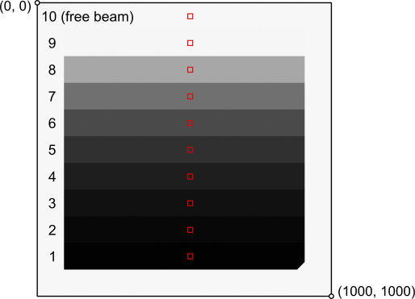
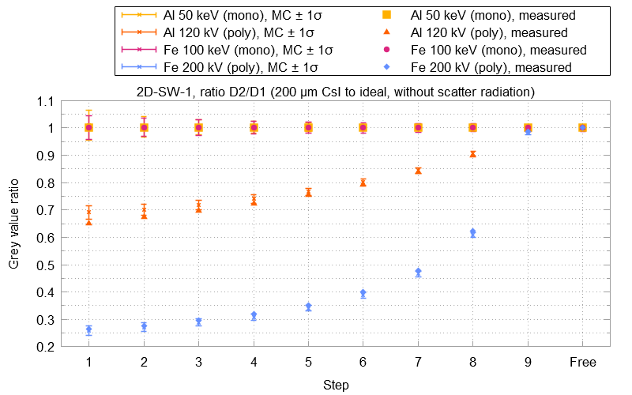

Module ctsimu.evaluation.test2D_SW_1
Test 2D-SW-1: Scintillator characteristics
In this scenario, the imaging characteristics of specific scintillators is tested for different X-ray source spectra and two different object materials. Two spherical step wedges are used, one made of aluminum, the other one of iron. Each wedge features nine steps of different thickness. The test compares their gray values (as well as the free beam gray value) for each combination of scintillator, material and spectrum (both monochromatic and polychromatic) to a corresponding ideal image taken with an ideal detector, i.e., one whose gray values correspond linearly to the intensity of incident radiation.
The following table lists all the scenarios that need to be simulated for this test, along with the keyword that needs to be used to correctly identify each projection metadata file for the toolbox.
| Keyword | Material | Spectrum | Scintillator |
|---|---|---|---|
D1_Al_50 |
Al | 50 keV mono | ideal |
D1_Al_120 |
Al | 120 kV poly | ideal |
D1_Fe_100 |
Fe | 100 keV mono | ideal |
D1_Fe_200 |
Fe | 200 kV poly | ideal |
D2_Al_50 |
Al | 50 keV mono | 200 μm CsI |
D2_Al_120 |
Al | 120 kV poly | 200 μm CsI |
D2_Fe_100 |
Fe | 100 keV mono | 200 μm CsI |
D2_Fe_200 |
Fe | 200 kV poly | 200 μm CsI |
D3_Al_50 |
Al | 50 keV mono | 500 μm CsI |
D3_Al_120 |
Al | 120 kV poly | 500 μm CsI |
D3_Fe_100 |
Fe | 100 keV mono | 500 μm CsI |
D3_Fe_200 |
Fe | 200 kV poly | 500 μm CsI |
D4_Al_50 |
Al | 50 keV mono | 500 μm Gd2O2S |
D4_Al_120 |
Al | 120 kV poly | 500 μm Gd2O2S |
D4_Fe_100 |
Fe | 100 keV mono | 500 μm Gd2O2S |
D4_Fe_200 |
Fe | 200 kV poly | 500 μm Gd2O2S |
An example call for this test scenario looks like this:
from ctsimu.toolbox import Toolbox
Toolbox("2D-SW-1",
D1_Al_50 = "2D-SW-1_Al_Detector1_50keV-mono_metadata.json",
D1_Al_120 = "2D-SW-1_Al_Detector1_120kV-poly_metadata.json",
D1_Fe_100 = "2D-SW-1_Fe_Detector1_100keV-mono_metadata.json",
D1_Fe_200 = "2D-SW-1_Fe_Detector1_200kV-poly_metadata.json",
D2_Al_50 = "2D-SW-1_Al_Detector2_50keV-mono_metadata.json",
D2_Al_120 = "2D-SW-1_Al_Detector2_120kV-poly_metadata.json",
D2_Fe_100 = "2D-SW-1_Fe_Detector2_100keV-mono_metadata.json",
D2_Fe_200 = "2D-SW-1_Fe_Detector2_200kV-poly_metadata.json",
D3_Al_50 = "2D-SW-1_Al_Detector3_50keV-mono_metadata.json",
D3_Al_120 = "2D-SW-1_Al_Detector3_120kV-poly_metadata.json",
D3_Fe_100 = "2D-SW-1_Fe_Detector3_100keV-mono_metadata.json",
D3_Fe_200 = "2D-SW-1_Fe_Detector3_200kV-poly_metadata.json",
D4_Al_50 = "2D-SW-1_Al_Detector4_50keV-mono_metadata.json",
D4_Al_120 = "2D-SW-1_Al_Detector4_120kV-poly_metadata.json",
D4_Fe_100 = "2D-SW-1_Fe_Detector4_100keV-mono_metadata.json",
D4_Fe_200 = "2D-SW-1_Fe_Detector4_200kV-poly_metadata.json"
)
If only a sub-sample should be tested, it is not necessary to provide all simulation results at once. However, if a scintillator scenario misses its corresponding ideal detector scenario, it cannot be evaluated.
For the evaluation, the ratio of scintillator gray value to ideal detector gray value is calculated for each step of the spherical wedge, as well as for a free beam region. The grey values are measured as the pixel mean within the regions of interest (ROI) given in the table below and illustrated in the following image, defined as rectangles with an upper left corner coordinate (x0, y0) in the pixel coordinate system which is included in the ROI, and a lower right corner coordinate (x1, y1) which is not included anymore in the ROI.
| Step | x0 | y0 | x1 | y1 |
|---|---|---|---|---|
| 1 | 510 | 854 | 530 | 875 |
| 2 | 510 | 763 | 530 | 784 |
| 3 | 510 | 672 | 530 | 693 |
| 4 | 510 | 581 | 530 | 602 |
| 5 | 510 | 490 | 530 | 511 |
| 6 | 510 | 399 | 530 | 420 |
| 7 | 510 | 308 | 530 | 329 |
| 8 | 510 | 217 | 530 | 238 |
| 9 | 510 | 126 | 530 | 147 |
| free beam | 510 | 35 | 530 | 56 |

The gray value ratios are compared to reference ratios obtained from particle transport Monte-Carlo simulations. The gray value results of such simulations are subject to stochastic noise. For a given mean Monte-Carlo gray value intensity μscint in a scintillator scenario, and a corresponding gray value intensity for the ideal detector μideal, Gaussian error propagation gives the error u of the Monte-Carlo gray value ratio, given the standard deviations \sigma_\text{scint} and \sigma_\text{ideal} of the grey values inside the ROI under consideration:
u\left(\frac{\mu_\text{scint}}{\mu_\text{ideal}}\right) = \sqrt{\frac{\sigma_\text{scint}^2}{\mu_\text{ideal}^2} + \frac{\sigma_\text{ideal}^2 \mu_\text{scint}^2}{\mu_\text{ideal}^4}}
During the Monte-Carlo simulations, the effects of primary radiation and scatter radiation can be separated. Accordingly, the evaluation provides two sets of results: one where only primary radiation is considered (file names contain primary), and one where both scattered radiation and primary radiation are considered (file names contain scatter). Depending on which kind of software is tested, the correct comparison set should be chosen from the two options.
An evaluation run will produce plots such as the example shown below. These plots display the measured gray value ratios and show them in relation to the results from the Monte-Carlo simulations with their corresponding uncertainty u.
The following example evaluation result plot displays the gray value ratios between detector 2 (200 μm CsI) and detector 1 (the ideal detector). Small crosses represent the gray value ratios calculated from the Monte-Carlo simulations. Their error bars cover the ratio's uncertainty u in both directions. Solid shapes without error bars show the measured ratios from the projections of the simulation software.

Additionally, the following data files are created:
-
2D-SW-1_all_GV_means.txtlists all the mean grey values in one file.
-
2D-SW-1_all_GV_ratios_to_D1.txtlists the grey value ratios for detectors D2, D3 and D4 to the scenarios from detector D1. It is self-evident that the grey value ratios of detector D1 to itself are all 1, but they are listed as well for clarity.
-
2D-SW-1_all_MCprimary_reference_ratios.txtlists all the grey value ratios and their uncertainties u calculated from the Monte-Carlo simulations for the case of only primary radiation simulated (i.e., no scatter radiation taken into account).
-
2D-SW-1_all_MCscatter_reference_ratios.txtlists all the grey value ratios and their uncertainties u calculated from the Monte-Carlo simulations for the case of both primary and scatter radiation simulated.
-
For each sub test, a file such as
2D-SW-1_D1_Al_50_grey_values.txtis generated which contains the ROI information and mean grey values.
Classes
class Test2D_SW_1 (resultFileDirectory='.', name=None, rawOutput=False)-
Expand source code
class Test2D_SW_1(generalTest): """ CTSimU test 2D-SW-1: detector models / scintillators. """ def __init__(self, resultFileDirectory=".", name=None, rawOutput=False): generalTest.__init__( self, testName="2D-SW-1", name=name, resultFileDirectory=resultFileDirectory, rawOutput=rawOutput) self.validSubtests = ["D1_Al_50", "D1_Al_120", "D1_Fe_100", "D1_Fe_200", "D2_Al_50", "D2_Al_120", "D2_Fe_100", "D2_Fe_200", "D3_Al_50", "D3_Al_120", "D3_Fe_100", "D3_Fe_200", "D4_Al_50", "D4_Al_120", "D4_Fe_100", "D4_Fe_200"] self.results = len(self.validSubtests)*[None] self.currentIndex = None self.shrink = 35 self.leftOffset = 510 - self.shrink self.nPixels = 20 + 2*self.shrink # Absolute step definitions. Will be shrunk to accept tolerance border, # but these absolute definitions are needed for grey value rescaling and clipping. self.steps = [ ImageROI(self.leftOffset, 819, self.leftOffset+self.nPixels, 910), ImageROI(self.leftOffset, 728, self.leftOffset+self.nPixels, 819), ImageROI(self.leftOffset, 637, self.leftOffset+self.nPixels, 728), ImageROI(self.leftOffset, 546, self.leftOffset+self.nPixels, 637), ImageROI(self.leftOffset, 455, self.leftOffset+self.nPixels, 546), ImageROI(self.leftOffset, 364, self.leftOffset+self.nPixels, 455), ImageROI(self.leftOffset, 273, self.leftOffset+self.nPixels, 364), ImageROI(self.leftOffset, 182, self.leftOffset+self.nPixels, 273), ImageROI(self.leftOffset, 91, self.leftOffset+self.nPixels, 182), ImageROI(self.leftOffset, 0, self.leftOffset+self.nPixels, 91) # free beam ] def prepare(self): """ Preparations before the test will be run with the images from the pipeline. """ self.prepared = True def prepareRun(self, i): if i < len(self.subtests): if self.subtests[i] in self.validSubtests: self.currentIndex = self.validSubtests.index(self.subtests[i]) else: raise Exception("{key} is not a valid subtest identifier for test scenario {test}. Identifiers from the following list are accepted: {valids}.".format(key=self.subtests[i], test=self.testName, valids=self.validSubtests)) # Load the correct GV reference data into results: results = Test2D_SW_1_results() results.subtestName = self.subtests[i] if self.subtests[i] == "D1_Al_50": results.loadReference("07_Al_noFilter_050keV-mono_Ideal") results.longName = "Al wedge, 50 keV (mono), ideal detector" elif self.subtests[i] == "D1_Al_120": results.loadReference("09_Al_noFilter_120kV-poly_Ideal") results.longName = "Al wedge, 120 kV (poly), ideal detector" elif self.subtests[i] == "D1_Fe_100": results.loadReference("11_Fe_noFilter_100kV-mono_Ideal") results.longName = "Fe wedge, 100 keV (mono), ideal detector" elif self.subtests[i] == "D1_Fe_200": results.loadReference("13_Fe_noFilter_200kV-poly_Ideal") results.longName = "Fe wedge, 120 kV (poly), ideal detector" elif self.subtests[i] == "D2_Al_50": results.loadReference("15_Al_noFilter_050keV-mono_200mum-CsI") results.longName = "Al wedge, 50 keV (mono), 200 µm CsI" elif self.subtests[i] == "D2_Al_120": results.loadReference("17_Al_noFilter_120kV-poly_200mum-CsI") results.longName = "Al wedge, 120 kV (poly), 200 µm CsI" elif self.subtests[i] == "D2_Fe_100": results.loadReference("19_Fe_noFilter_100keV-mono_200mum-CsI") results.longName = "Fe wedge, 100 keV (mono), 200 µm CsI" elif self.subtests[i] == "D2_Fe_200": results.loadReference("21_Fe_noFilter_200kV-poly_200mum-CsI") results.longName = "Fe wedge, 120 kV (poly), 200 µm CsI" elif self.subtests[i] == "D3_Al_50": results.loadReference("23_Al_noFilter_050keV-mono_500mum-CsI") results.longName = "Al wedge, 50 keV (mono), 500 µm CsI" elif self.subtests[i] == "D3_Al_120": results.loadReference("25_Al_noFilter_120kV-poly_500mum-CsI") results.longName = "Al wedge, 120 kV (poly), 500 µm CsI" elif self.subtests[i] == "D3_Fe_100": results.loadReference("27_Fe_noFilter_100keV-mono_500mum-CsI") results.longName = "Fe wedge, 100 keV (mono), 500 µm CsI" elif self.subtests[i] == "D3_Fe_200": results.loadReference("29_Fe_noFilter_200kV-poly_500mum-CsI") results.longName = "Fe wedge, 120 kV (poly), 500 µm CsI" elif self.subtests[i] == "D4_Al_50": results.loadReference("31_Al_noFilter_050kV-mono_500mum-GOS") results.longName = "Al wedge, 50 keV (mono), 500 µm Gd2O2S" elif self.subtests[i] == "D4_Al_120": results.loadReference("33_Al_noFilter_120kV-poly_500mum-GOS") results.longName = "Al wedge, 120 kV (poly), 500 µm Gd2O2S" elif self.subtests[i] == "D4_Fe_100": results.loadReference("35_Fe_noFilter_100keV-mono_500mum-GOS") results.longName = "Fe wedge, 100 keV (mono), 500 µm Gd2O2S" elif self.subtests[i] == "D4_Fe_200": results.loadReference("37_Fe_noFilter_200kV-poly_500mum-GOS") results.longName = "Fe wedge, 120 kV (poly), 500 µm Gd2O2S" self.results[self.currentIndex] = results else: if len(self.subtests) == 0: raise Exception("Please provide keywords that identify which metadata file belongs to which subtest. Test {testname} accepts identifiers from the following list: {valids}.".format(testname=self.testName, valids=self.validSubtests)) else: raise Exception("Number of provided image metadata files exceeds number of test runs ({expected}).".format(expected=len(self.subtests))) def run(self, image): self.prepare() self.prepareRun(self.currentRun) i = self.currentIndex subtestName = self.subtests[self.currentRun] # Grey value summary statsText = "# Evaluation of Test {name}, {subname}:\n".format(name=self.name, subname=subtestName) statsText += "# {longDesc}\n".format(longDesc=self.results[i].longName) statsText += "# \n" statsText += "# ROI mean grey value per step\n" statsText += "# step\tx0\ty0\tx1\ty1\twidth [px]\theight [px]\tarea [px]\tmean [GV]\n" step = 0 for roi in self.steps: step += 1 smallerROI = copy.deepcopy(roi) smallerROI.grow(-self.shrink) stats = image.stats(smallerROI) statsText += "{}\t{}\t{}\t{}\t{}\t{}\t{}\t{}\t{:.3f}\n".format(step, smallerROI.x0, smallerROI.y0, smallerROI.x1, smallerROI.y1, stats["width"], stats["height"], stats["area"], stats["mean"]) self.results[i].means.append(stats["mean"]) statsFileName = "{dir}/{name}_{subname}_grey_values.txt".format(dir=self.resultFileDirectory, name=self.name, subname=subtestName) with open(statsFileName, 'w') as statsFile: statsFile.write(statsText) statsFile.close() self.currentRun += 1 return image def followUp(self): # Means meansText = "# step" for r in range(len(self.results)): meansText += "\t{}".format(self.validSubtests[r]) meansText += "\n" for step in range(len(self.steps)): meansText += "{}".format(step+1) for result in self.results: if result is not None: meansText += "\t{:.3f}".format(result.means[step]) else: meansText += "\t-" meansText += "\n" meansFileName = "{dir}/{name}_all_GV_means.txt".format(dir=self.resultFileDirectory, name=self.name) with open(meansFileName, 'w') as meansFile: meansFile.write(meansText) meansFile.close() # Calculate and write ratios to D1 (ideal detector) for r in range(len(self.results)): result = self.results[r] D1result = self.results[r%4] if D1result is not None: if result is not None: result.ratios_to_D1 = len(self.steps)*[None] result.ratios_to_D1_mc_primary = len(self.steps)*[None] result.ratios_to_D1_mc_total = len(self.steps)*[None] result.error_ratios_to_D1_mc_primary_lower = len(self.steps)*[None] result.error_ratios_to_D1_mc_primary_upper = len(self.steps)*[None] result.error_ratios_to_D1_mc_total_lower = len(self.steps)*[None] result.error_ratios_to_D1_mc_total_upper = len(self.steps)*[None] for step in range(len(self.steps)): result.ratios_to_D1[step] = result.means[step] / D1result.means[step] result.ratios_to_D1_mc_primary[step], result.error_ratios_to_D1_mc_primary_upper[step] = divide_and_error( muA = result.means_mc_primary[step], muB = D1result.means_mc_primary[step], errA = result.error_mc_primary_upper[step], errB = D1result.error_mc_primary_upper[step] ) result.ratios_to_D1_mc_primary[step], result.error_ratios_to_D1_mc_primary_lower[step] = divide_and_error( muA = result.means_mc_primary[step], muB = D1result.means_mc_primary[step], errA = result.error_mc_primary_lower[step], errB = D1result.error_mc_primary_lower[step] ) result.ratios_to_D1_mc_total[step], result.error_ratios_to_D1_mc_total_upper[step] = divide_and_error( muA = result.means_mc_total[step], muB = D1result.means_mc_total[step], errA = result.error_mc_total_upper[step], errB = D1result.error_mc_total_upper[step] ) result.ratios_to_D1_mc_total[step], result.error_ratios_to_D1_mc_total_lower[step] = divide_and_error( muA = result.means_mc_total[step], muB = D1result.means_mc_total[step], errA = result.error_mc_total_lower[step], errB = D1result.error_mc_total_lower[step] ) if r < 4: # this is an ideal detector, set ratio uncertainty to zero result.error_ratios_to_D1_mc_primary_upper[step] = 0 result.error_ratios_to_D1_mc_primary_lower[step] = 0 result.error_ratios_to_D1_mc_total_upper[step] = 0 result.error_ratios_to_D1_mc_total_lower[step] = 0 # Measured ratios ratiosText = "# step" for i in range(len(self.results)): ratiosText += "\t{}".format(self.validSubtests[i]) ratiosText += "\n" for step in range(len(self.steps)): ratiosText += "{}".format(step+1) for r in range(len(self.results)): result = self.results[r] D1result = self.results[r%4] if result is not None: if D1result is not None: ratiosText += "\t{:.5f}".format(result.ratios_to_D1[step]) else: ratiosText += "\t-" else: ratiosText += "\t-" ratiosText += "\n" ratiosFileName = "{dir}/{name}_all_GV_ratios_to_Det1.txt".format(dir=self.resultFileDirectory, name=self.name) with open(ratiosFileName, 'w') as ratiosFile: ratiosFile.write(ratiosText) ratiosFile.close() # Monte-Carlo reference results (only primary radiation accounted for) ratiosText = "# step" for i in range(len(self.results)): ratiosText += "\t{name}\tu_lower({name})\tu_upper({name})".format(name=self.validSubtests[i]) ratiosText += "\n" for step in range(len(self.steps)): ratiosText += "{}".format(step+1) for r in range(len(self.results)): result = self.results[r] D1result = self.results[r%4] if result is not None: if D1result is not None: ratiosText += "\t{:.5f}".format(result.ratios_to_D1_mc_primary[step]) ratiosText += "\t{:.5f}".format(result.error_ratios_to_D1_mc_primary_lower[step]) ratiosText += "\t{:.5f}".format(result.error_ratios_to_D1_mc_primary_upper[step]) else: ratiosText += "\t-" ratiosText += "\t-" else: ratiosText += "\t-" ratiosText += "\t-" ratiosText += "\n" ratiosFileName = "{dir}/{name}_all_MCprimary_reference_ratios.txt".format(dir=self.resultFileDirectory, name=self.name) with open(ratiosFileName, 'w') as ratiosFile: ratiosFile.write(ratiosText) ratiosFile.close() # Monte-Carlo reference results (scatter radiation accounted for) ratiosText = "# step" for i in range(len(self.results)): ratiosText += "\t{name}\tu_lower({name})\tu_upper({name})".format(name=self.validSubtests[i]) ratiosText += "\n" for step in range(len(self.steps)): ratiosText += "{}".format(step+1) for r in range(len(self.results)): result = self.results[r] D1result = self.results[r%4] if result is not None: if D1result is not None: ratiosText += "\t{:.5f}".format(result.ratios_to_D1_mc_total[step]) ratiosText += "\t{:.5f}".format(result.error_ratios_to_D1_mc_total_lower[step]) ratiosText += "\t{:.5f}".format(result.error_ratios_to_D1_mc_total_upper[step]) else: ratiosText += "\t-" ratiosText += "\t-" else: ratiosText += "\t-" ratiosText += "\t-" ratiosText += "\n" ratiosFileName = "{dir}/{name}_all_MCtotal_reference_ratios.txt".format(dir=self.resultFileDirectory, name=self.name) with open(ratiosFileName, 'w') as ratiosFile: ratiosFile.write(ratiosText) ratiosFile.close() self.plotResults() def plotResults(self): xValues = numpy.linspace(0, len(self.steps), len(self.steps), endpoint=False) xLabels = ("1", "2", "3", "4", "5", "6", "7", "8", "9", "10") # minor x ticks: mxValues = numpy.linspace(0.5, len(self.steps)-0.5, len(self.steps)-1, endpoint=False) try: import matplotlib import matplotlib.pyplot from matplotlib.ticker import (MultipleLocator, FormatStrFormatter, AutoMinorLocator) matplotlib.use("agg") subDetails = ["Al 50 keV (mono)", "Al 120 kV (poly)", "Fe 100 keV (mono)", "Fe 200 kV (poly)"] subDetectors = ["Ideal", "200 µm CsI", "500 µm CsI", "500 µm Gd2O2S"] colors = ['#ffb000', '#fe6100', '#dc267f', '#648fff'] d = 0 epsilon = numpy.array([-1.5, -0.5, 0.5, 1.5]) * 0.18 # data point spacing markers = ["x", "x", "x", "x"] for detector in ["Det2", "Det3", "Det4"]: d += 1 subDetector = subDetectors[d] dOffset = 4*d for mode in ("primary", "total"): fig, ax = matplotlib.pyplot.subplots(nrows=1, ncols=1, figsize=(8, 6)) for t in range(0, 4): # 4 sub-tests per detector subDetail = subDetails[t] r = dOffset + t subtestName = self.results[r].subtestName # Grey value ratios: if mode == "primary": modeDescription = "primary radiation" ax.errorbar(xValues+epsilon[t], self.results[r].ratios_to_D1_mc_primary, xerr=None, yerr=[self.results[r].error_ratios_to_D1_mc_primary_lower, self.results[r].error_ratios_to_D1_mc_primary_upper], linewidth=0, elinewidth=2.0, ecolor=colors[t]) ax.plot(xValues+epsilon[t], self.results[r].ratios_to_D1_mc_primary, '_', markersize=11.0, label="{detail}, Monte-Carlo".format(detail=subDetail), color=colors[t]) else: modeDescription = "total radiation (scatter+primary)" ax.errorbar(xValues+epsilon[t], self.results[r].ratios_to_D1_mc_total, xerr=None, yerr=[self.results[r].error_ratios_to_D1_mc_total_lower, self.results[r].error_ratios_to_D1_mc_total_upper], linewidth=0, elinewidth=2.0, ecolor=colors[t]) ax.plot(xValues+epsilon[t], self.results[r].ratios_to_D1_mc_total, '_', markersize=11.0, label="{detail}, Monte-Carlo".format(detail=subDetail), color=colors[t]) ax.plot(xValues+epsilon[t], self.results[r].ratios_to_D1, markers[t], markersize=6.0, label="{detail}, measured".format(detail=subDetail), color=colors[t]) """ # Grey values: if mode == "primary": modeDescription = "primary radiation" ax.errorbar(xValues+epsilon[t], self.results[r].means_mc_primary, xerr=None, yerr=[self.results[r].error_mc_primary_lower, self.results[r].error_mc_primary_upper], linewidth=0, elinewidth=2.0, ecolor=colors[t]) ax.plot(xValues+epsilon[t], self.results[r].means_mc_primary, '_', markersize=7.0, label="{detail}, MC ± 1u".format(detail=subDetail), color=colors[t]) ax.plot(xValues+epsilon[t], self.results[r].means_mcray_primary, 'o', markersize=4.0, label="{detail}, McRay".format(detail=subDetail), color=colors[t]) ax.plot(xValues+epsilon[t], self.results[r].means_rosi_primary, 'v', markersize=4.0, label="{detail}, ROSI".format(detail=subDetail), color=colors[t]) else: modeDescription = "total radiation (scatter+primary)" ax.errorbar(xValues+epsilon[t], self.results[r].means_mc_total, xerr=None, yerr=[self.results[r].error_mc_total_lower, self.results[r].error_mc_total_upper], linewidth=0, elinewidth=2.0, ecolor=colors[t]) ax.plot(xValues+epsilon[t], self.results[r].means_mc_total, '_', markersize=7.0, label="{detail}, MC ± 1u".format(detail=subDetail), color=colors[t]) ax.plot(xValues+epsilon[t], self.results[r].means_mcray_total, 'o', markersize=4.0, label="{detail}, McRay".format(detail=subDetail), color=colors[t]) ax.plot(xValues+epsilon[t], self.results[r].means_rosi_total, 'v', markersize=4.0, label="{detail}, ROSI".format(detail=subDetail), color=colors[t]) """ ax.set_xlim([-0.5, 9.5]) ax.set_xlabel("step") ax.set_ylabel("grey value ratio") ax.set_title(label="2D-SW-1, ratio {detector}/Det1 ({subDet} to ideal), {details}".format(detector=detector, subDet=subDetector, details=modeDescription), loc='left', fontsize=10) ax.set_xticks(xValues, minor=False) ax.set_xticks(mxValues, minor=True) ax.xaxis.set_ticklabels(xLabels) ax.grid(visible=True, which='major', axis='y', color='#d9d9d9', linestyle='dashed') ax.grid(visible=True, which='minor', axis='x', color='#d9d9d9', linestyle='dashed') ax.grid(visible=False, which='major', axis='x') ax.legend(loc='upper center', bbox_to_anchor=(0.5, -0.15), ncol=2) ax.tick_params(axis="x", which="major", length=0, color="#ffffff") ax.tick_params(axis="x", which="minor", length=5) fig.tight_layout(pad=2.5) plotFilename = "{dir}/{name}_{detector}_ratios_{mode}.png".format(dir=self.resultFileDirectory, name=self.name, detector=detector, mode=mode) matplotlib.pyplot.savefig(plotFilename) fig.clf() matplotlib.pyplot.close('all') except Exception as e: log(f"Warning: Error plotting results for test {self.name}, {subtestName} using matplotlib: {e}")CTSimU test 2D-SW-1: detector models / scintillators.
Ancestors
Methods
def prepare(self)-
Expand source code
def prepare(self): """ Preparations before the test will be run with the images from the pipeline. """ self.prepared = TruePreparations before the test will be run with the images from the pipeline.
def prepareRun(self, i)-
Expand source code
def prepareRun(self, i): if i < len(self.subtests): if self.subtests[i] in self.validSubtests: self.currentIndex = self.validSubtests.index(self.subtests[i]) else: raise Exception("{key} is not a valid subtest identifier for test scenario {test}. Identifiers from the following list are accepted: {valids}.".format(key=self.subtests[i], test=self.testName, valids=self.validSubtests)) # Load the correct GV reference data into results: results = Test2D_SW_1_results() results.subtestName = self.subtests[i] if self.subtests[i] == "D1_Al_50": results.loadReference("07_Al_noFilter_050keV-mono_Ideal") results.longName = "Al wedge, 50 keV (mono), ideal detector" elif self.subtests[i] == "D1_Al_120": results.loadReference("09_Al_noFilter_120kV-poly_Ideal") results.longName = "Al wedge, 120 kV (poly), ideal detector" elif self.subtests[i] == "D1_Fe_100": results.loadReference("11_Fe_noFilter_100kV-mono_Ideal") results.longName = "Fe wedge, 100 keV (mono), ideal detector" elif self.subtests[i] == "D1_Fe_200": results.loadReference("13_Fe_noFilter_200kV-poly_Ideal") results.longName = "Fe wedge, 120 kV (poly), ideal detector" elif self.subtests[i] == "D2_Al_50": results.loadReference("15_Al_noFilter_050keV-mono_200mum-CsI") results.longName = "Al wedge, 50 keV (mono), 200 µm CsI" elif self.subtests[i] == "D2_Al_120": results.loadReference("17_Al_noFilter_120kV-poly_200mum-CsI") results.longName = "Al wedge, 120 kV (poly), 200 µm CsI" elif self.subtests[i] == "D2_Fe_100": results.loadReference("19_Fe_noFilter_100keV-mono_200mum-CsI") results.longName = "Fe wedge, 100 keV (mono), 200 µm CsI" elif self.subtests[i] == "D2_Fe_200": results.loadReference("21_Fe_noFilter_200kV-poly_200mum-CsI") results.longName = "Fe wedge, 120 kV (poly), 200 µm CsI" elif self.subtests[i] == "D3_Al_50": results.loadReference("23_Al_noFilter_050keV-mono_500mum-CsI") results.longName = "Al wedge, 50 keV (mono), 500 µm CsI" elif self.subtests[i] == "D3_Al_120": results.loadReference("25_Al_noFilter_120kV-poly_500mum-CsI") results.longName = "Al wedge, 120 kV (poly), 500 µm CsI" elif self.subtests[i] == "D3_Fe_100": results.loadReference("27_Fe_noFilter_100keV-mono_500mum-CsI") results.longName = "Fe wedge, 100 keV (mono), 500 µm CsI" elif self.subtests[i] == "D3_Fe_200": results.loadReference("29_Fe_noFilter_200kV-poly_500mum-CsI") results.longName = "Fe wedge, 120 kV (poly), 500 µm CsI" elif self.subtests[i] == "D4_Al_50": results.loadReference("31_Al_noFilter_050kV-mono_500mum-GOS") results.longName = "Al wedge, 50 keV (mono), 500 µm Gd2O2S" elif self.subtests[i] == "D4_Al_120": results.loadReference("33_Al_noFilter_120kV-poly_500mum-GOS") results.longName = "Al wedge, 120 kV (poly), 500 µm Gd2O2S" elif self.subtests[i] == "D4_Fe_100": results.loadReference("35_Fe_noFilter_100keV-mono_500mum-GOS") results.longName = "Fe wedge, 100 keV (mono), 500 µm Gd2O2S" elif self.subtests[i] == "D4_Fe_200": results.loadReference("37_Fe_noFilter_200kV-poly_500mum-GOS") results.longName = "Fe wedge, 120 kV (poly), 500 µm Gd2O2S" self.results[self.currentIndex] = results else: if len(self.subtests) == 0: raise Exception("Please provide keywords that identify which metadata file belongs to which subtest. Test {testname} accepts identifiers from the following list: {valids}.".format(testname=self.testName, valids=self.validSubtests)) else: raise Exception("Number of provided image metadata files exceeds number of test runs ({expected}).".format(expected=len(self.subtests)))
Inherited members
class Test2D_SW_1_results-
Expand source code
class Test2D_SW_1_results: """ Results for one sub test of the filtering scenario. """ def __init__(self): self.subtestName = "" self.longName = "" # Grey value means and ratios (per wedge step): self.means = [] # Mean value for each step (measured for simulation software) self.ratios_to_D1 = None # grey value ratios to ideal detector (measured for simulation software) # Grey values from Monte-Carlo simuation: self.means_rosi_total = None # accounting for scatter radiation self.means_rosi_primary = None # accounting only for primary radiation self.means_mcray_total = None # accounting for scatter radiation self.means_mcray_primary = None # accounting only for primary radiation # Reference values for Monte-Carlo simulation (calculated in loadReference()) self.means_mc_total = None # accounting for scatter radiation self.means_mc_primary = None # accounting only for primary radiation self.error_mc_total_upper = None self.error_mc_total_lower = None self.error_mc_primary_upper = None self.error_mc_primary_lower = None self.ratios_to_D1_mc_total = None self.ratios_to_D1_mc_primary = None self.error_ratios_to_D1_mc_total_upper = None self.error_ratios_to_D1_mc_total_lower = None self.error_ratios_to_D1_mc_primary_upper = None self.error_ratios_to_D1_mc_primary_lower = None def loadReference(self, name): dataText = pkgutil.get_data(__name__, "data/2D-SW-1_scenario{name}.txt".format(name=name)).decode() dataIO = io.StringIO(dataText) allData = numpy.loadtxt(dataIO, delimiter='\t') # ignore free beam # --- total radiation means_rosi_total = allData[:,1] means_mcray_total = allData[:,4] means_total = (means_rosi_total + means_mcray_total) * 0.5 delta_total = numpy.absolute(means_rosi_total - means_mcray_total) stddev_rosi_total = allData[:,2] stddev_mcray_total = allData[:,5] #err_total = 0.5*(delta_total + numpy.sqrt(numpy.square(stddev_rosi_total) + numpy.square(stddev_mcray_total))) err_total_rosi = numpy.fmax(stddev_rosi_total, stddev_mcray_total-delta_total) + 0.5*delta_total err_total_mcray = numpy.fmax(stddev_mcray_total, stddev_rosi_total-delta_total) + 0.5*delta_total err_total_upper = numpy.zeros_like(err_total_rosi) err_total_lower = numpy.zeros_like(err_total_rosi) for i in range(len(err_total_upper)): if means_rosi_total[i] > means_total[i]: # ROSI is upper bound err_total_upper[i] = err_total_rosi[i] err_total_lower[i] = err_total_mcray[i] else: # McRay is upper bound err_total_upper[i] = err_total_mcray[i] err_total_lower[i] = err_total_rosi[i] # --- primary radiation means_rosi_primary = allData[:,9] means_mcray_primary = allData[:,12] means_primary = (means_rosi_primary + means_mcray_primary) * 0.5 delta_primary = numpy.absolute(means_rosi_primary - means_mcray_primary) stddev_rosi_primary = allData[:,10] stddev_mcray_primary = allData[:,13] #err_primary = 0.5*(delta_primary + numpy.sqrt(numpy.square(stddev_rosi_primary) + numpy.square(stddev_mcray_primary))) err_primary_rosi = numpy.fmax(stddev_rosi_primary, stddev_mcray_primary-delta_primary) + 0.5*delta_primary err_primary_mcray = numpy.fmax(stddev_mcray_primary, stddev_rosi_primary-delta_primary) + 0.5*delta_primary err_primary_upper = numpy.zeros_like(err_primary_rosi) err_primary_lower = numpy.zeros_like(err_primary_rosi) for i in range(len(err_primary_upper)): if means_rosi_primary[i] > means_primary[i]: # ROSI is upper bound err_primary_upper[i] = err_primary_rosi[i] err_primary_lower[i] = err_primary_mcray[i] else: # McRay is upper bound err_primary_upper[i] = err_primary_mcray[i] err_primary_lower[i] = err_primary_rosi[i] self.means_rosi_total = means_rosi_total self.means_rosi_primary = means_rosi_primary self.means_mcray_total = means_mcray_total self.means_mcray_primary = means_mcray_primary self.means_mc_total = means_total self.means_mc_primary = means_primary self.error_mc_total_upper = err_total_upper self.error_mc_total_lower = err_total_lower self.error_mc_primary_upper = err_primary_upper self.error_mc_primary_lower = err_primary_lower dataIO.close()Results for one sub test of the filtering scenario.
Methods
def loadReference(self, name)-
Expand source code
def loadReference(self, name): dataText = pkgutil.get_data(__name__, "data/2D-SW-1_scenario{name}.txt".format(name=name)).decode() dataIO = io.StringIO(dataText) allData = numpy.loadtxt(dataIO, delimiter='\t') # ignore free beam # --- total radiation means_rosi_total = allData[:,1] means_mcray_total = allData[:,4] means_total = (means_rosi_total + means_mcray_total) * 0.5 delta_total = numpy.absolute(means_rosi_total - means_mcray_total) stddev_rosi_total = allData[:,2] stddev_mcray_total = allData[:,5] #err_total = 0.5*(delta_total + numpy.sqrt(numpy.square(stddev_rosi_total) + numpy.square(stddev_mcray_total))) err_total_rosi = numpy.fmax(stddev_rosi_total, stddev_mcray_total-delta_total) + 0.5*delta_total err_total_mcray = numpy.fmax(stddev_mcray_total, stddev_rosi_total-delta_total) + 0.5*delta_total err_total_upper = numpy.zeros_like(err_total_rosi) err_total_lower = numpy.zeros_like(err_total_rosi) for i in range(len(err_total_upper)): if means_rosi_total[i] > means_total[i]: # ROSI is upper bound err_total_upper[i] = err_total_rosi[i] err_total_lower[i] = err_total_mcray[i] else: # McRay is upper bound err_total_upper[i] = err_total_mcray[i] err_total_lower[i] = err_total_rosi[i] # --- primary radiation means_rosi_primary = allData[:,9] means_mcray_primary = allData[:,12] means_primary = (means_rosi_primary + means_mcray_primary) * 0.5 delta_primary = numpy.absolute(means_rosi_primary - means_mcray_primary) stddev_rosi_primary = allData[:,10] stddev_mcray_primary = allData[:,13] #err_primary = 0.5*(delta_primary + numpy.sqrt(numpy.square(stddev_rosi_primary) + numpy.square(stddev_mcray_primary))) err_primary_rosi = numpy.fmax(stddev_rosi_primary, stddev_mcray_primary-delta_primary) + 0.5*delta_primary err_primary_mcray = numpy.fmax(stddev_mcray_primary, stddev_rosi_primary-delta_primary) + 0.5*delta_primary err_primary_upper = numpy.zeros_like(err_primary_rosi) err_primary_lower = numpy.zeros_like(err_primary_rosi) for i in range(len(err_primary_upper)): if means_rosi_primary[i] > means_primary[i]: # ROSI is upper bound err_primary_upper[i] = err_primary_rosi[i] err_primary_lower[i] = err_primary_mcray[i] else: # McRay is upper bound err_primary_upper[i] = err_primary_mcray[i] err_primary_lower[i] = err_primary_rosi[i] self.means_rosi_total = means_rosi_total self.means_rosi_primary = means_rosi_primary self.means_mcray_total = means_mcray_total self.means_mcray_primary = means_mcray_primary self.means_mc_total = means_total self.means_mc_primary = means_primary self.error_mc_total_upper = err_total_upper self.error_mc_total_lower = err_total_lower self.error_mc_primary_upper = err_primary_upper self.error_mc_primary_lower = err_primary_lower dataIO.close()